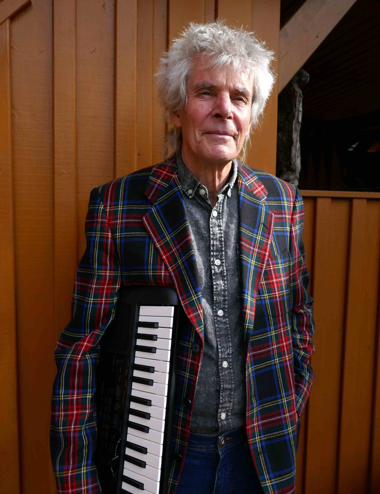
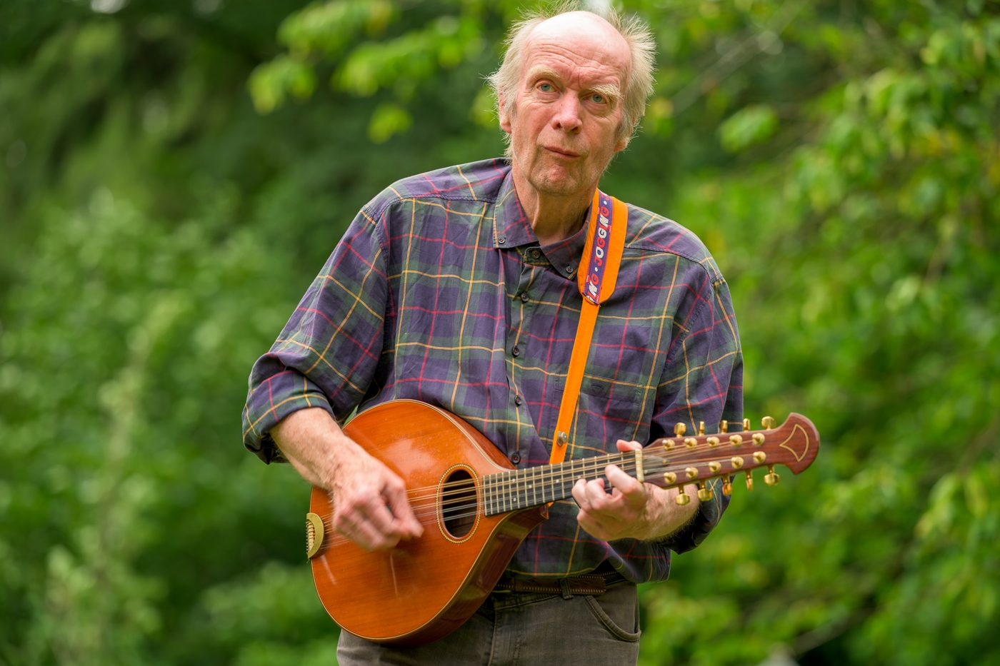
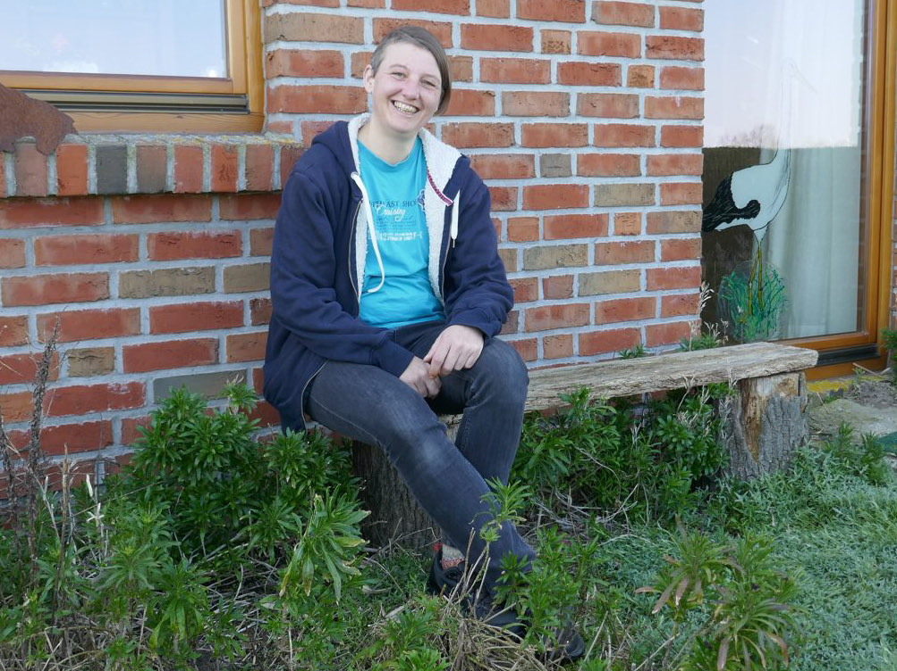
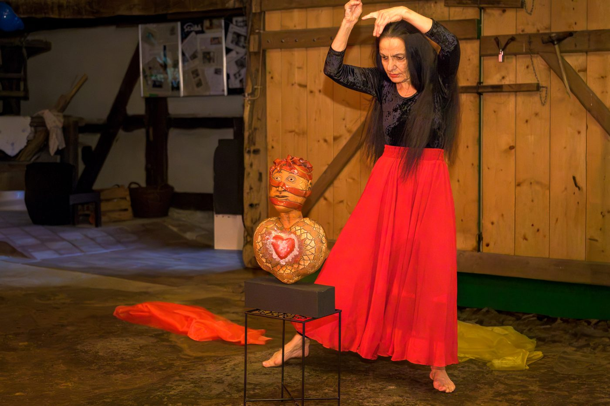
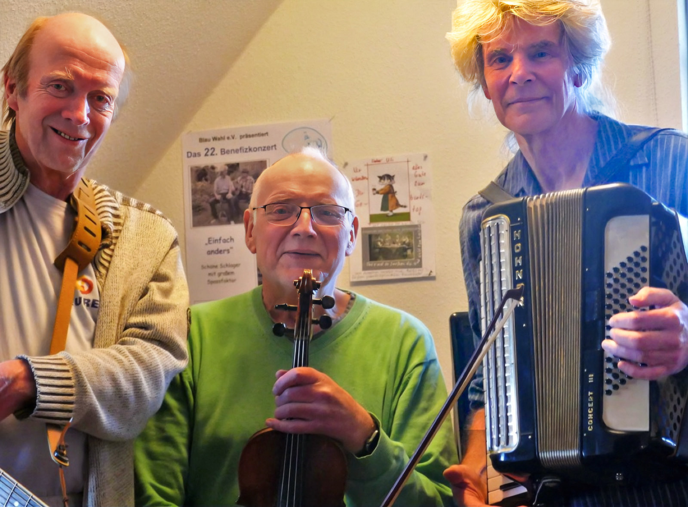

Wer da spielt
Uli Preuss und Manni Kehr, beide leidenschaftliche Rentner, singen gern mehrstimmig und bearbeiten Piano, Gitarre, Mandoline, Akkordeon, Mandola und Drehleier.

Uli Preuss
Gründungsmitglied der Arrested Amtsbrüder, Sulingen. Er hat die Band 1994 mit Rainer Wölk aus der Taufe gehoben, in ihrer Lieblingskneipe, dem „Amtsschimmel“.

Manni Kehr
Kam 2022 zunächst als „Oberschließer“ dazu und ist inzwischen zum Amtsbruder aufgestiegen. Als „Ungeküsster Frosch“ bespielte er schon in den 80er Jahren den Amtsschimmel.

Christina Wolf
Trallert seit Kindheitstagen nicht nur in der Badewanne. Gelegentlich unterstützt sie die Amtsbrüder gesanglich und mit dem Cajon — dann heißt es „Die Amtsbrüder & Die Wölfin“.

Anne Heinz
Vom Kunsthof Bockhorn. Sie gestaltet mit ihrem Tanz die Performance zum Programm „Es geht eine dunkle Wolk herein“.
- Piano
- Gitarre
- Mandoline
- Akkordeon
- Mandola
- Drehleier
- Cajon
- Mehrstimmiger Gesang
„Die Amtsbrüder“
Zuerst gab es die „Arrested Amtsbrüder“: Uli Preuss und Rainer Wölk lernten sich im Sulinger „Amtsschimmel“ kennen, um fortan brüderlich ihrer Leidenschaft nachzugehen — selbstverständlich immer wieder in ihrer Lieblingskneipe.
Rainer Wölk starb im Februar 2023. Manni Kehr kam 2022 zunächst als „Oberschließer“ dazu und ist inzwischen zum Amtsbruder aufgestiegen. Als „Ungeküsster Frosch“ bespielte er schon in den 80er Jahren den Amtsschimmel.
